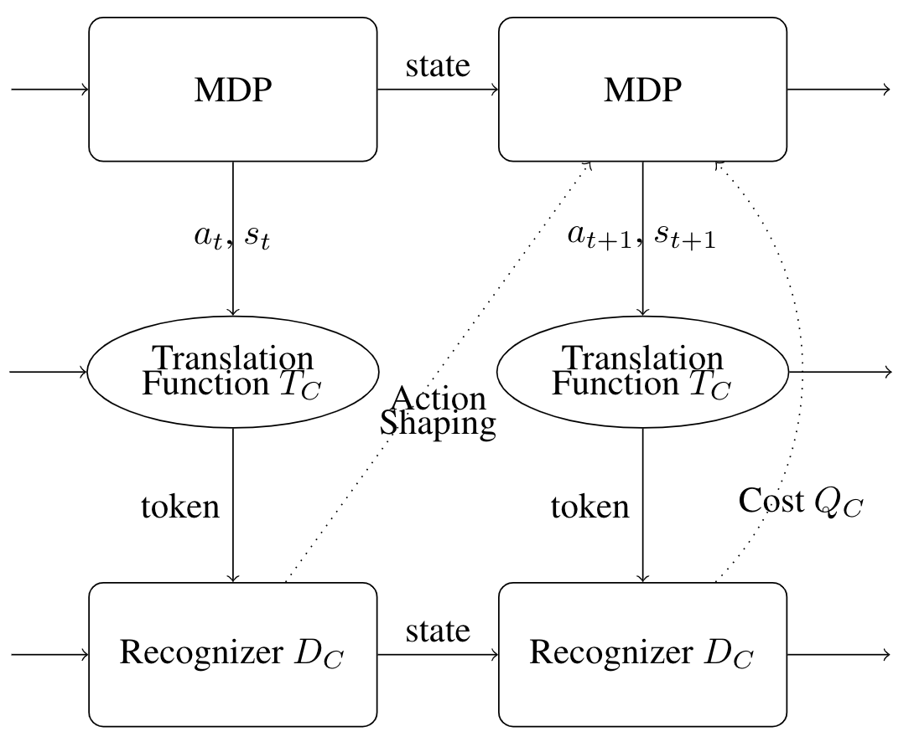
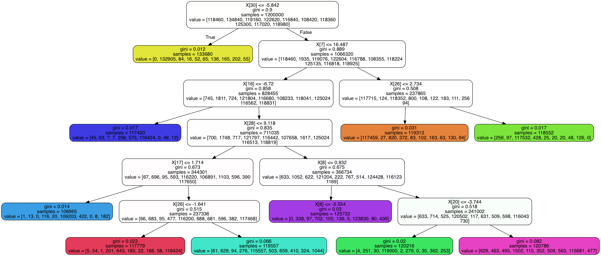

|
||
|

Eleanor Quint, Dong Xu, Samuel Flint, Stephen Scott, Matthew Dwyer NeurIPS-2019 Workshop on Safety and Robustness in Decision Making [arXiv] / [code] tl;dr The structure of constraints represented in formal languages can train deep RL with fewer violations and higher return. Eleanor Quint, Stephen Scott Intelligent Image Analysis for Plant Phenotyping, 221-238 [Amazon] tl;dr Invited textbook chapter introducing deep learning for non-experts. 
Eleanor Quint, Garrett Wirka, Jacob Williams, Stephen Scott, NV Vinodchandran [OpenReview] tl;dr Introduces a distributional decision tree to classify with the latent of a VAE as input. |